The Heat Equation
Finite Element Method, ME 477
Table of Contents
(\(\S2.1,2\)) Formulation of 2/3-D BVP’s
\(\leftarrow\) Previous Lecture
- Let \(n_{sd} (=2\,\mathrm{or}\, 3)\) denote the number of spatial dimensions of the model problem and \(\Omega \subset \mathbb{R}^{n_{sd}}\) be an open set with piecewise boundary \(\Gamma\).
- A general point is denoted by \(\boldsymbol{x}\).
- The outward unit normal vector to \(\Gamma\) is denoted by \(\boldsymbol{n}\).
\(\boldsymbol{x}\) and \(\boldsymbol{n}\) accept the following representations
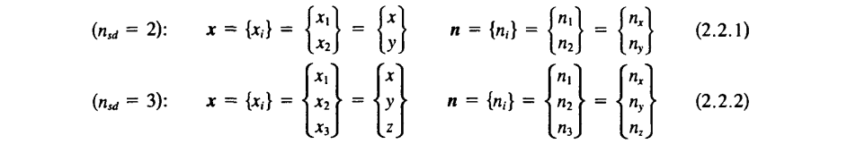
where the notation \(\Box_i\) is known as the index notation.
An Example 2-D Domain
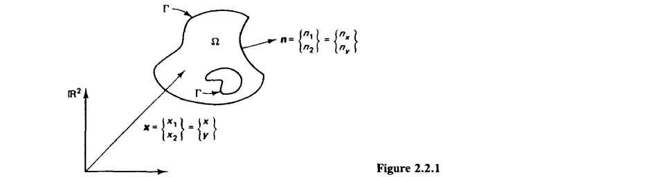
- We assume that \(\Gamma\) admits the decomposition \[ \Gamma = \overline{\Gamma_g \cup \Gamma_h} \] where \[ \Gamma_g \cap \Gamma_h = \emptyset. \]
- A bar above a set means set closure, i.e. the union of the set with its boundary. Thus \(\bar{\Omega} = \Omega \cup \Gamma\).
Indicial Notation
- Let the indices \(i\), \(j\), \(k\), \(l\), run over the values \(1,\ldots,n_{sd}\).
- Differentiation is denoted by a comma (e.g., \(u_{,i} = u_{,x_i} = \partial u/\partial x_i\)).
- Repeated indices imply summation (e.g., in \(\mathbb{R}^3\), \(u_{,ii} = u_{,11} + u_{,22} + u_{,33} = \partial^2 u/\partial x^2 + \partial^2 u/\partial y^2 + \partial^2 u/\partial z^2\)).
- The summation convention only applies to the indices \(i\), \(j\), \(k\), and \(l\) and only when the repetition is twice.
- If there are three, or more, repeated indices in an expression, then the summation convention is not in effect.
- An index which appears only once is called a free index. If a free index appears in one of the terms of an expression, it has to be present in all the other terms as well.
Divergence Theorem (extended to 2/3-D)
Let \(f:\bar\Omega \to \mathbb{R}\; \mathrm{be} \; C^1\). Then \[ \int_\Omega f_{,i}\, d\Omega = \int_\Gamma fn_i\, d\Gamma \]
Integration by Parts
Let \(f\) be as above and also let \(g:\bar\Omega \to \mathbb{R}\; \mathrm{be} \; C^1\). Then \[ \int_\Omega f_{,i}g\, d\Omega = -\int_\Omega fg_{,i}\, d\Omega + \int_\Gamma fgn_i\,d\Gamma \]
(\(\S2.3\)) Linear Heat Conduction: Strong and Weak Forms
- Let \(q_i\) denote (Cartesian components of) heat flux vector, let \(u\) be the temperature, and let \(\mathscr{f}\) be the heat supply per unit volume.
- Assume the heat flux vector is defined in terms of the temperature gradient by the generalized Fourier’s law: \[ q_i = -\kappa_{ij} u_{,j}, \hspace{2em} \kappa_{ij} = \kappa_{ji} \hspace{2em} \mathrm{symmetry} \] where conductivities, \(\kappa_{ij}\)’s are given functions of \(\boldsymbol{x}\). (If the \(\kappa_{ij}\)’s are constant throughout \(\Omega\), the body is said to be homogeneous.)
- The generalized fouried law is a constitutive equation, or equation of state.
- The conductivity matrix, \(\boldsymbol{\kappa} = [\kappa_{ij}]\), is assumed positive definite.
- The most common situation in practice is the isotropic case in which \(\kappa_{ij}(\boldsymbol{x}) = \kappa(\boldsymbol{x}) \delta_{ij}\), where \(\delta_{ij}\) is the Kronecker delta.
Strong Form (\(S\))
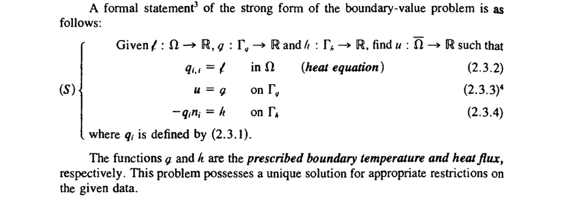
The weak formulation of the boundary-value problem can be constructed analogous to the 1-D problem.
- \(u = \mathscr{g} \; \mathrm{on}\; \Gamma_\mathscr{g}\) is treated as an essential B.C., while,
- \(-q_i n_i = \mathscr{h} \; \mathrm{on}\; \Gamma_\mathscr{h}\) is treated as a natural B.C.
- \(\mathscr{\delta}\) and \(\mathscr{V}\) denote the trial and weight function sets.
- All functions in \(\mathscr{\delta}\) are expected to satisfy the essential B.C. while those in \(\mathscr{V}\) should obey \[ w = 0 \hspace{1em} \mathrm{on}\; \Gamma_\mathscr{g} \]
With these definitions the weak formulation can be defined next.
Weak Form (\(W\))
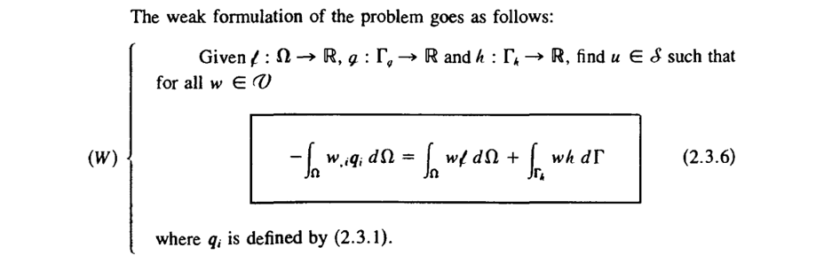
and its proof…
Abstract Version of (\(W\))
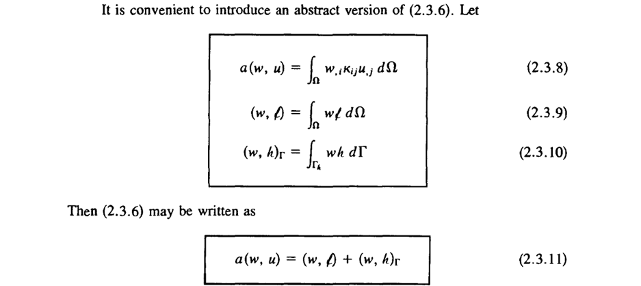
Switching back to Tensor Notation
- Although the index notation has just been introduced as a universal means to represent tensor algebra and calculus that is frequently displayed by fundamental laws of physics…
- the situation becomes very complicated when the Galerkin procedure is introduced.
- New indices (dof and equation labels) appear due to the discretization employed.
- For this reason it is useful to adopt the usual tensor notation.
- Let \(\nabla\) denote the gradient operator (assume \(n_{sd}= 2\)) \[\nabla u = \{u_{,i}\} = \begin{Bmatrix} u_{,1} \\ u_{,2} \end{Bmatrix} \hspace{2em} \nabla w = \{w_{,i}\} = \begin{Bmatrix} w_{,1} \\ w_{,2} \end{Bmatrix} \]
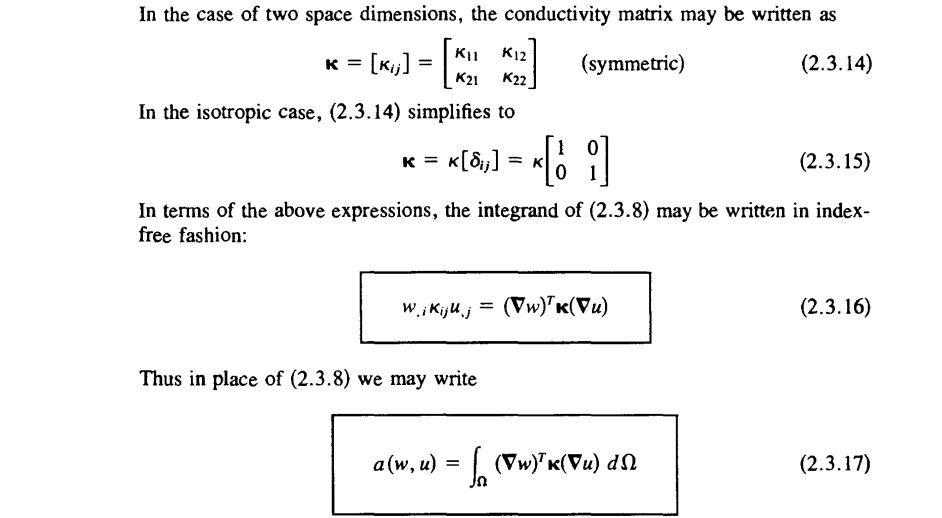
(\(\S2.4\)) Galerkin Formulation (\(G\))
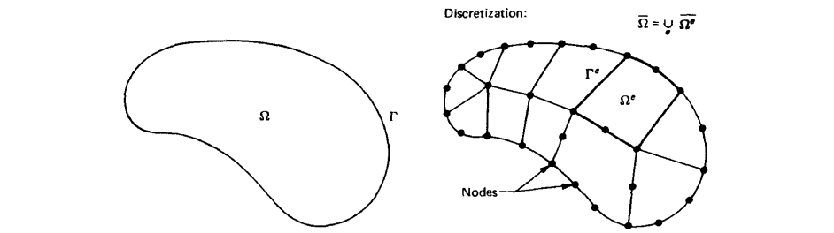
- We now view our domain as “discretized” into element domains \(\Omega^e,\,1\leq e \leq n_{el}\).
- In 2-D the element domains might be simply triangles and quadrilaterals.
- Nodal points appear at locations such as element vertices and interelement boundaries.
- Let \(\mathscr{\delta}^h\) and \(\mathscr{V}^h\) be finite-dimensional approximations to \(\mathscr{\delta}\) and \(\mathscr{V}\), respectively. We assume all members of \(\mathscr{V}^h\) vanish, or approximately vanish, on \(\Gamma_\mathscr{g}\) and that each member of \(\mathscr{\delta}^h\) admits the representation \[ u^h = v^h + g^h \] where \(v^h \in \mathscr{V}^h\) and \(\mathscr{g}^h\) results in satisfaction, or at least approximate satisfaction, of the boundary condition \(u=\mathscr{g}\) on \(\Gamma_\mathscr{g}\).
The Galerkin formulation (\(G\)) reads:
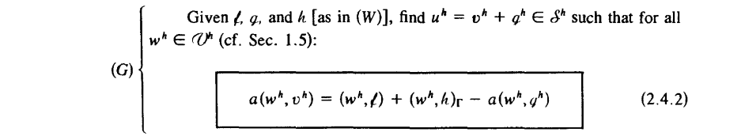
The Matrix Equations (in Global Scheme)
- Let \(\eta = \{1,2,\ldots,n_{np}\}\) the set of global node numbers, where \(n_{np}\) is the number of nodal points.
- In this terminology, \(\mathscr{g}\) node refers to a node, \(A\), at which the solution variable is prescribed, i.e., \(u^h = \mathscr{g}\).
- Let \(\eta_\mathscr{g} \in \eta\) be the set of “\(\mathscr{g}\) nodes”.
- The complement of \(\eta_\mathscr{g}\) in \(\eta\), denoted by \(\eta - \eta_\mathscr{g}\), is the set of nodes at which the solution \(u^h\) is to be determined.
- The number of nodes in \(\eta - \eta_\mathscr{g}\) equals \(n_{eq}\), the number of equations.
A Typical Member of \(\mathscr{V}^h\)
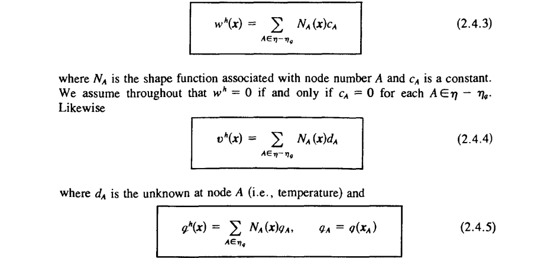
Discretization Error
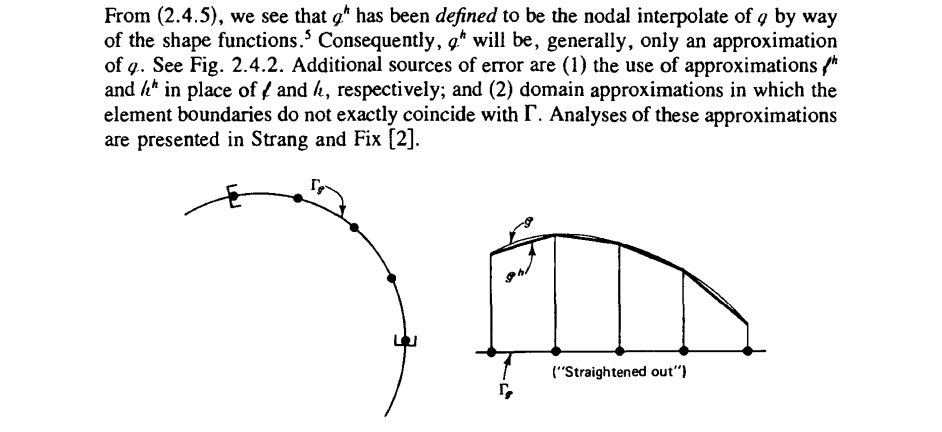
Indexing the Equations and Solution Variables
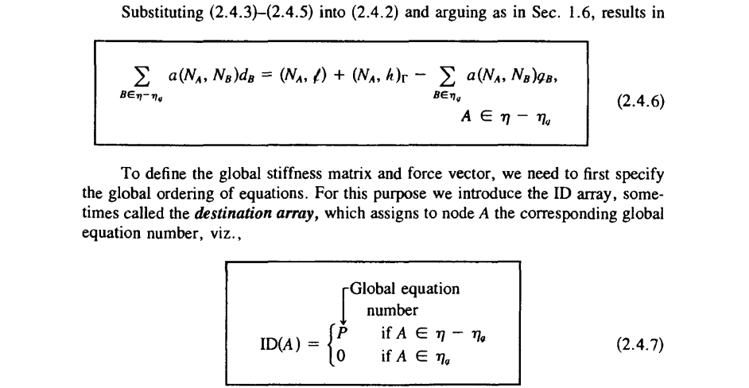
Matrix Form of Equations (\(M\))
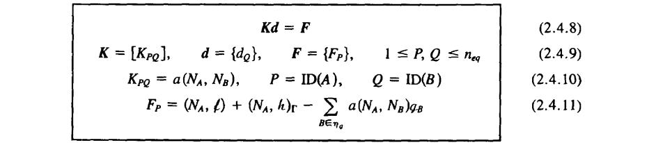
- \(1\leq P \leq n_{eq}\) refers to the equation number.
- The dimension of ID array is \(n_{np}\) (the solution components)
- The nodes at which \(\mathscr{g}\) is prescribed are assigned “equation number” zero.
- \(\boldsymbol{K}\) is symmetric and positive-definite.
(\(\S2.5\)) Element Stiffness and Force Arrays
Element Arrays in Global Scheme
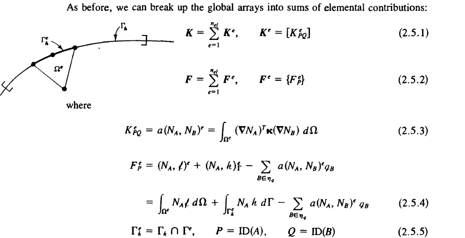
Element Arrays in Local Scheme
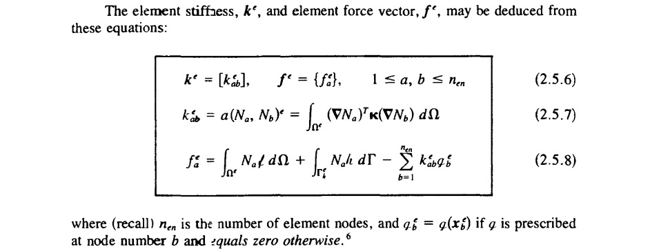
Finite Element Jargon/Terminology
The element stiffness matrix can be written in terms of some custom variables intrinsic to the historical developments of finite elements (and it’s programming)
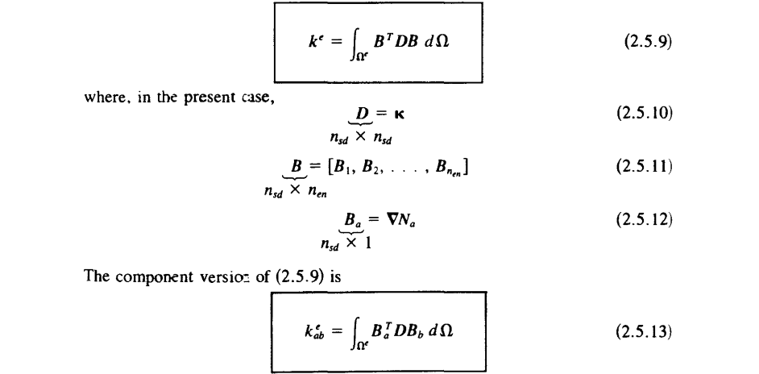
\(\boldsymbol{B}\) is widely acknowledged as the “strain-displacement” array although in the current setting it reflects the temperature gradient array.
- This completes the treatment of the 2-D heat conducion with finite elements.
- More will be explained about the 2-D element formulation in Chapter 3.